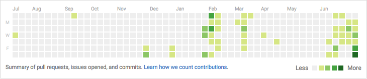

I contribute to several open source projects on Github, some of my own projects and to private Bitbucket repositories.
Before this year, my employment restricted how much I could contribute.
Collaboration
This is an example of an issue I submitted to poltergeist,
because it lacked a feature I needed for my own project.